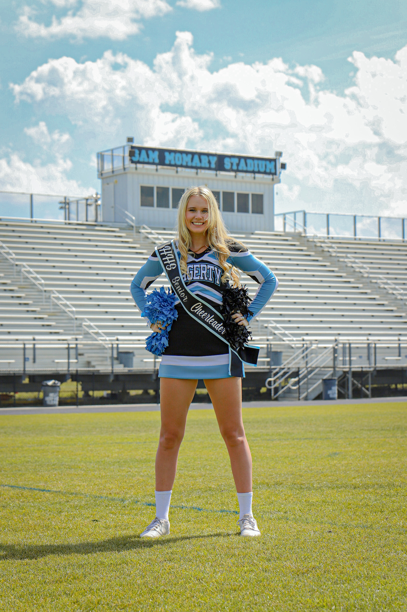
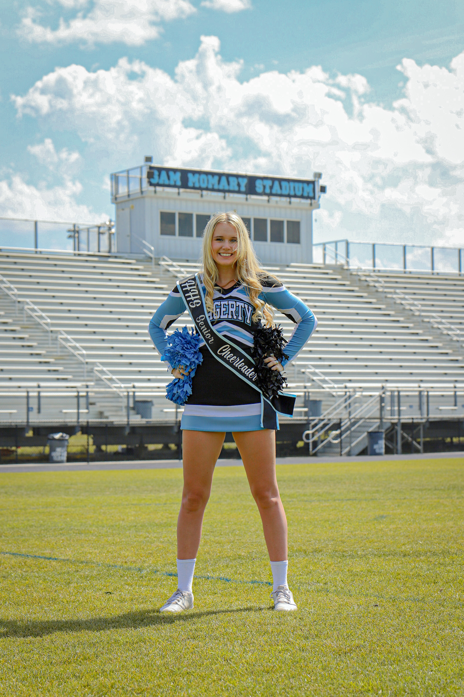
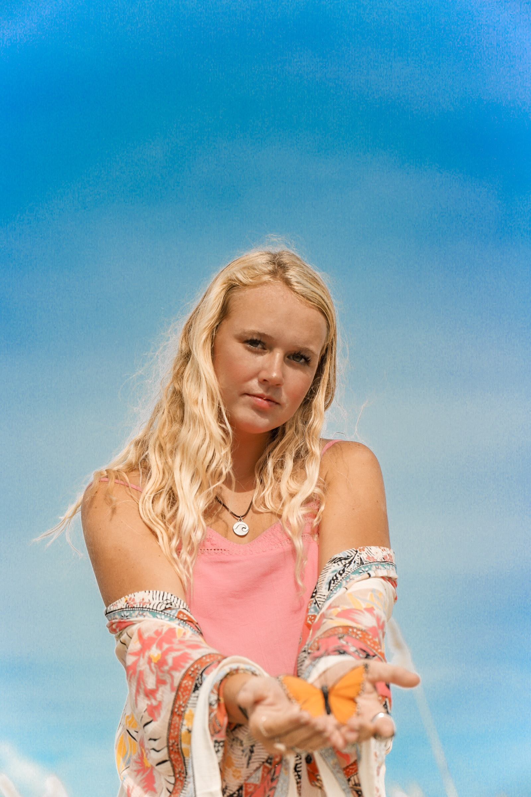
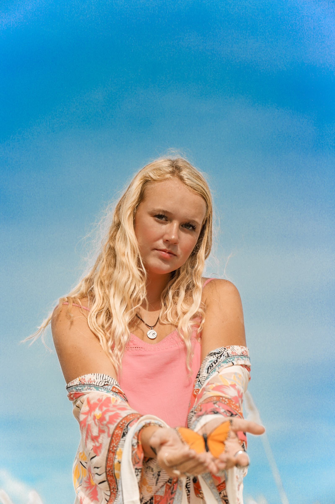
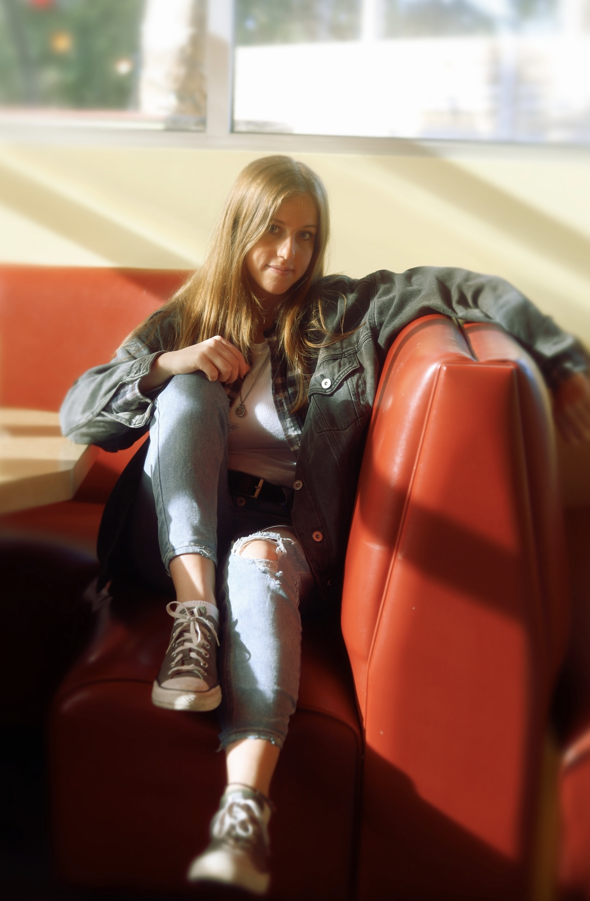
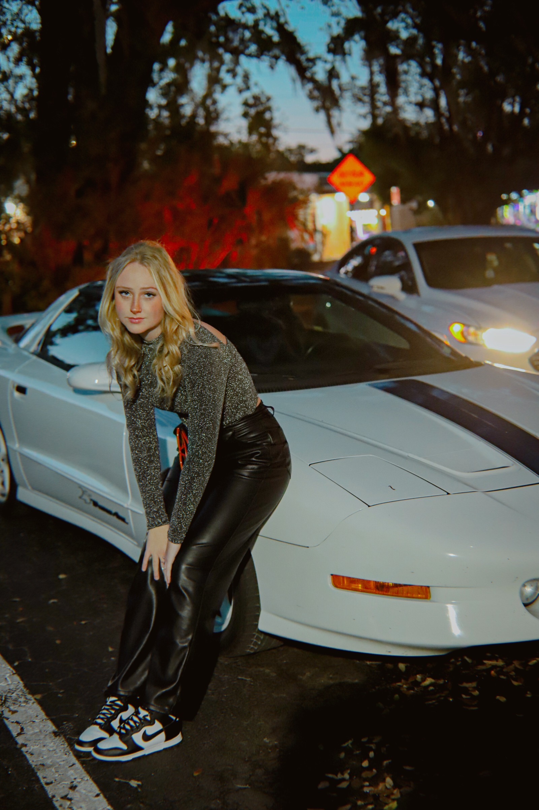
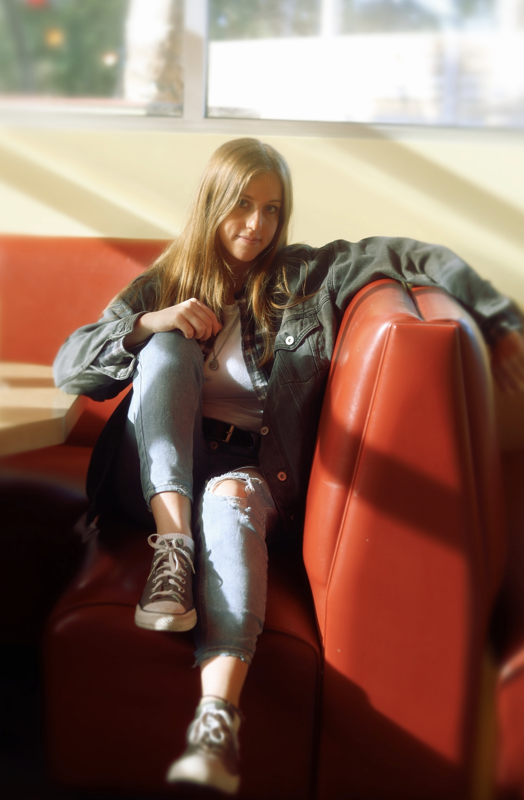
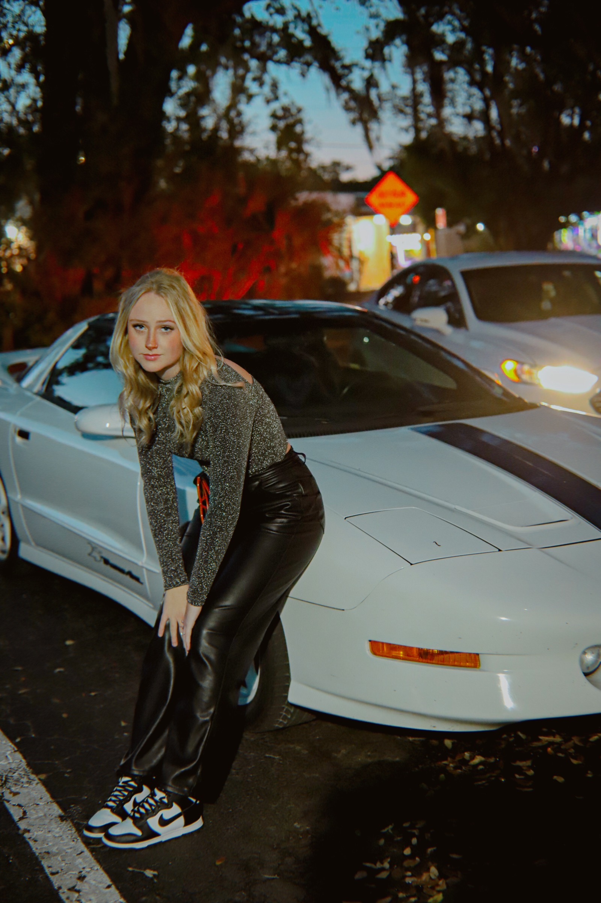

My name is Karlie and I am an Orlando-based photographer with a focus on transforming visions into photographs. I have been capturing the beauty of people and animals since I got my hands on my mom’s DSLR camera at 10 years of age. I took this camera everywhere with me, especially to my barn where I would spend hours photographing horses in their elegant state. I am currently a student at Seminole State College, studying for a Digital Media Degree. Along with school, I own a yard sign business named SG Oviedo. Long story short, I love being creative and helping people find joy through visual expression!
 

 

 



Copyright 2023, Karlie Caroline